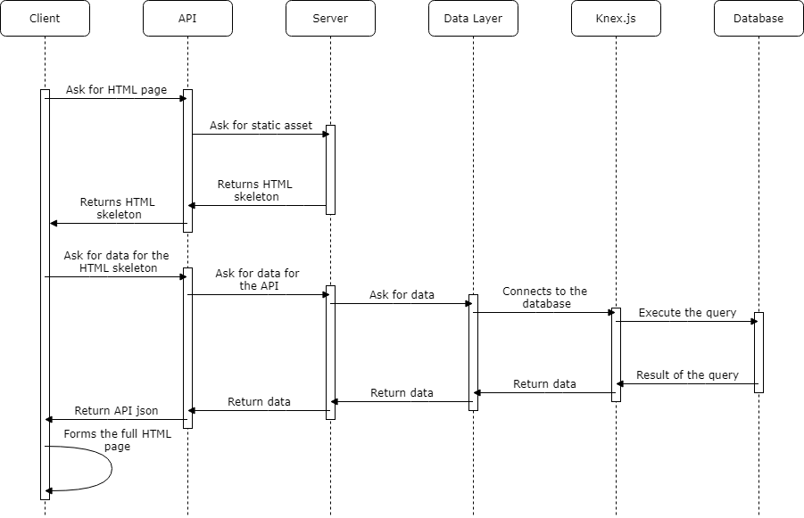
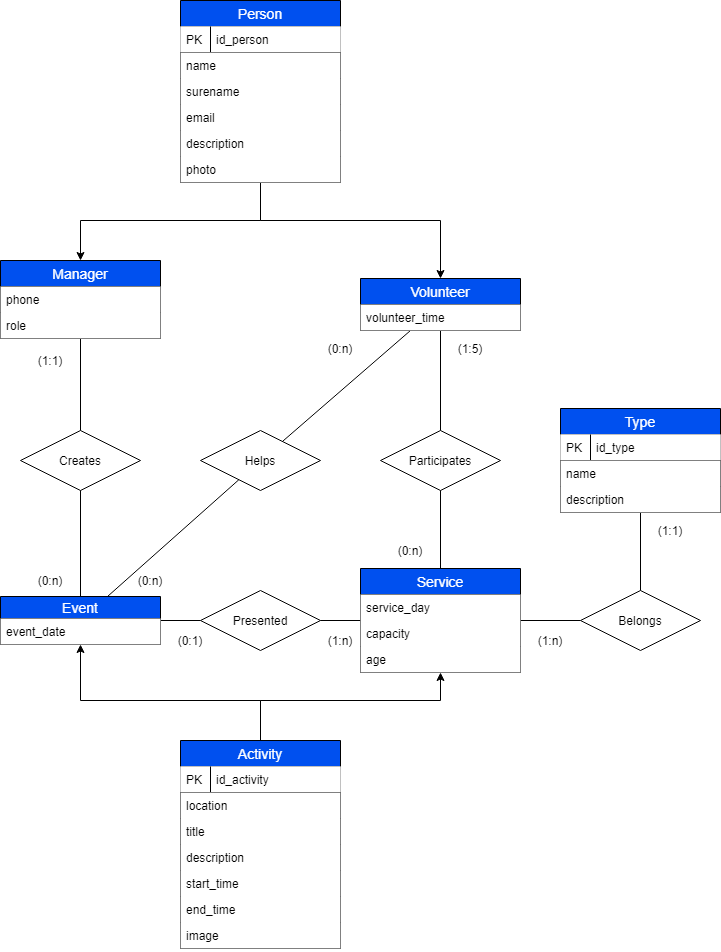

| Member n. | Role | First name | Last Name | Matricola | Email address |
|-----------|--------|------------|------------|-----------|-----------------------------------|
| 1 | member | Victor | Alzorriz | 10729353 | victoralzorriz@gmail.com |
| 2 | member | Parniya | Saeedzadeh | 10740816 | parniya.saeedzadeh@mail.polimi.it |
| 3 | admin | Mohamad | Nezam | 10699585 | mohamad.nezam@mail.polimi.it |
- Deliverable D0: the web application is accessible at (https://hyp-project.herokuapp.com).
- Deliverable D2: the YAML or JSON file containing the specification of the app API can be found at (https://hyp-project.herokuapp.com/backend/spect.yaml).
- Deliverable D3: the SwaggerUI page of the same API is available at (https://hyp-project.herokuapp.com/backend/swaggerui).
- Deliverable D4: the source code of D0 is available as a zip file at (https://hyp-project.herokuapp.com/backend/app.zip) (Note that the zip file do not include the images used for the page, because if we did included the file size would be to large to upload it to GitHub since the limit for a single file is 25 MB. If you want to get all the images you could get them from GitHub at the path /statics/img).
- Deliverable D5: the address of the online source control repository is available (https://github.com/MohamadNezam/HYP-Project).
We hereby declare that this is a private repository and, upon request, we will give access to the instructors.
Describe here, with a diagram, the components of your web application and how they interact. Highlight which parts belong to the
application layer, data layer or presentation layer. How did you ensure that HTML is not rendered server side?
The architecture of our application consist of 6 layers: the client or presentation layer, the API layer, the server layer, the data layer,
the knex.js layer, and the database layer. The flow of events between the different layers, when a user asks for a HTML page, is represented in
the following diagram. As you can see when the client asks for a HTML page the server return a HTML skeleton to the client, then the client
ask the API for the necessary information to fill the HTML skeleton. Thanks to this we ensure that the HTML is rendered on the client side and
not on the server.

Describe here to what extent did you follow REST principles and what are the reasons for which you might have decided to diverge.
Note, you must not describe the whole API here, just the design decisions.
- We tried to follow as much as possible the REST principles and best practices. First, we use simple endpoints with plural nouns,
like "/volunteers" or "/events", as the REST principles suggest. We also rely a lot on parameters to filter and modify the data from
the principal endpoints, like "/events?order=event_date&limit=3", instead of creating operational URLs. For the relationships we use
sub-resource, like "/services/{serviceId}/volunteers", instead of URLs as the best practices suggest. We also used the appropriate
operation for each case and since the application focuses on fetching resources from the server, we use only GET operations for the API.
Describe here synthetically, which models you have introduced forresources.
- For our API we defined 5 different models, Managers, Volunteers, Events, Services and Categories:
- Manager: corresponds to a manager of the association, and contains the following data: id_person, name, surname, email, description,
photo, phone and role.
- Volunteer: corresponds to a volunteer of the association, and contains the following data: id_person, name, surname, email, description,
photo and volunteer_time.
- Event: corresponds to an event organized by the association, and contains the following data: id_activity, location, title, description,
start_time, end_time, image, event_date, id_manager and id_service.
- Service: corresponds to a service provided by the association, and contains the following data: id_activity, location, title, description,
start_time, end_time, image, day, capacity, age and id_category.
- Category: corresponds to a category of services provided by the association, and contains the following data: id_category, title and description.
If you want more information about the model you can check the API documentation in the SwaggerUI in the following link:
https://hyp-project.herokuapp.com/backend/swaggerui
Describe with an ER diagram the model used in the data layer of your web application. How this map to the OpenAPI data model?
- The following ER diagram represent how the data is store in the database. As you can see in the diagram, the design of the database
correlates well with the data models of the API, with the only difference that we are using inheritance to store the data in the
database more efficiently.

Describe here which tools, languages and frameworks did you use for the backend of the application.
- For the backend part we use Javascript for the server programing and SQL to design and setup the database.
First we used Swagger Editor to define the API of the application.
Then we use NodeJs for our backend server together with the Swagger Editor to create a server template according to our API specifications.
Before starting with the database we set up the server so it can return static assets, like html pages, so other team mates could start
working on the frontend of the application. We did this by installing the library serve-static and defining the folder where the static
assets where stored.
Then we set up the database, in our case we use Postgres, by creating two sql files, one with the sql code to create all the tables of
the database, and other with the sql sentences to insert all the data in to the database.
After having the database running, we set up the data layer of the server by defining the connection between the database and the server,
and calling all the different services that our web server provides throw the API.
Finally we defined how the server will retrieve the information from the database and returning it throw the API. For this task we use another
library called knex.js to add another extra layer between the server and the database. This library helps us make the server independent from
the database by executing the sql sentences dynamically depending of the type of database that we use. For example, right now we are using a
Postgres database, but if in the future we want to use MySql, thanks to the library we won't have to change each sql sentences, we will only
need to change the connection type and the knex.js library will do the rest.
When all the parts where working we deployed the server on Heroku so it can be access anywhere.
How did you make sure your web application adheres to the provided OpenAPI specification? Which method did you use to test all APIs
endpoints against the expected response?
- The first method we use to test the APIs endpoints was checking each of the endpoints URLs returned the correct information stored in the
database. Then when we had the server deployed remotely and the SwaggerUI implement, we used it to test all the endpoints since thanks to its
UI we can test each of the APIs endpoints easily with the push of a button.
Why do you think your web application adheres to common practices to partition a REST-based web application (static assets vs. application data)
- Our application adheres to common practices of REST application regarding static assets and application data because the server first provides the
user with the static html page and then the static page fetch the data he needs from the API.
Describe synthetically why and how did you manage session state, what are the state change triggering actions (e.g., POST to login etc..).
- Since our application is the webpage of a voluntary association, and its main function is to showcase the different events and services that the
association provides, it does not need that the user have to be loged in. For this reason we decided not to implement a login system.
Which technology did you use (relational or a no-SQL database) for managing the data model?
- For data model we used the relational database provided by Postgres, since it has all the necessary functionalities and we can use it for free.
Describe here how development tasks have been subdivided among members of the group, e.g.:
- Here we describe how much time has each of our group member spent on each part of the project, Victor focusing on Backend, Database and API,
Parniya focusing full time to Frontend, and Mohammed focusing on Backend, Frontend and Deployment:
- Victor Alzorriz worked on backend (40% of the time), database design and setup (30% of the time) and OpenAPI Spec (30% of the time).
- Parniya Saeedzadeh worked on front-end (100% of the time).
- Mohamad Nezam worked on Backend (50% of the time), Deployment (20% of the time) and Frontend (30% of the time).
Describe here the research of (full or part of) existing APIs that are similar in objectives and scope to the
one implemented, that have possibly guided implementation choices (these should not be necessarily OpenAPI
implementations). Toy APIs (such as the Swagger's Pet Store) or the example shown during lectures are not a
valid response.
- The API that we researched for our application in the following: https://api.itbook.store/
This API is a very simple REST API of a bookstore from which you can retrieve and search books. We used this API as a model for ours since it shares
a lot of the basic functionalities with our web application. First the bookstore API it's also based on returning information with GET operations,
just like ours but way simpler. Another interesting feature from the bookstore API that we used to guide our implementation is the structure
that it uses to get a specific book by the ISBN "/books/{isbn}". This structure is pretty much identical to the structure that we use for the main
part of our API, like "/managers/{managerId}" but in our case we did extend it to also contain sub-resources like "/managers/{managerId}/events".
What was the most important thing all the members have learned while developing this part of the project, what questions remained unanswered,
how you will use what you've learned in your everyday life?
- Thanks to this project all the group has gain a lot of knowledge about web servers and web developing.
Some of the thing that the group has learned are:
- Victor improve his Javascript and SQL code writing and learned how to use and design APIs.
He also learned a lot about how web servers send and receive data, and how they work in the background.
- Parniya learned alot about making a website responsive with bootstrap and also improving her knowledge in javascripts and jQuery and generally a big improvement in web developing.
- Mohamad learned to used bootstrap in designing and increased his knowledge in javascript and jquery and the ability to generate dynamic content
And got general idea about API and how it works and how should we design it.